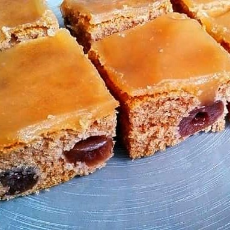

Čerešňová bublanina — Normy Jedál
Domáci koláčik akokoľvek jednoduchý, to je najviac.
BUBLANINA Z ČEREŠŇOVÉHO KOMPÓTU - alebo aj višňového - podľa toho, aký máme doma.
Čerešňový kompót zlejem cez sitko, lebo do cesta pôjdu len čerešne bez šťavy. Šťavu budeme potrebovať neskôr.
Na cesto vymiešam 2 vajíčka s 3/4 šálky (trstinového) cukru.(kľudne však môžeme použiť téglik bieleho jogurtu namiesto vajíčok - koláčik je potom šťavnatý).
Pridáme 2 šálky polohrubej (bezlepková mix B) múky, 1/2 šálky oleja, šálku mlieka, ČL perníkového korenia alebo škorice a PDP. Vymiešame cesto a nalejeme ho do vymasteného plechu vysypaného múkou, strúhankou alebo kokosom.
Pečieme cca pol hodinky pri 170-180°C.
Keď sa koláčik upečie, vyberieme ho a pokračujeme tak, že vo zvyšnej kompótovej šťave rozmiešame balíček vanilkového pudingu a necháme povariť za stáleho miešania asi minútku. Hneď nalejeme na koláč a rozotrieme - tuhne to veľmi rýchlo, tak sa treba trošku poponáhľať.
Kto to obľubuje - nech si ho kľudne dozdobí šľahačkou alebo čokoládou.
Kávička je k tomuto koláčiku ideálna.
..
.
#myglutenfreemeals #kolacik #domacepecenie #domacipeceni #domacikolac #domowewypieki #peceniejeradost #pecenie #homebaked #sweets #ceresnovabublanina #bublanina #ceresnovykolac #bakingtime #glutenfreerecipes #glutenfree #bezlepku #bezglutenu #singluten #ciasto #ciastodomowe #cherrycake #cakegram #foodgram #dulces #decereza #ciasto #ciastowiśniowe #dnespeciem #peciemdoma